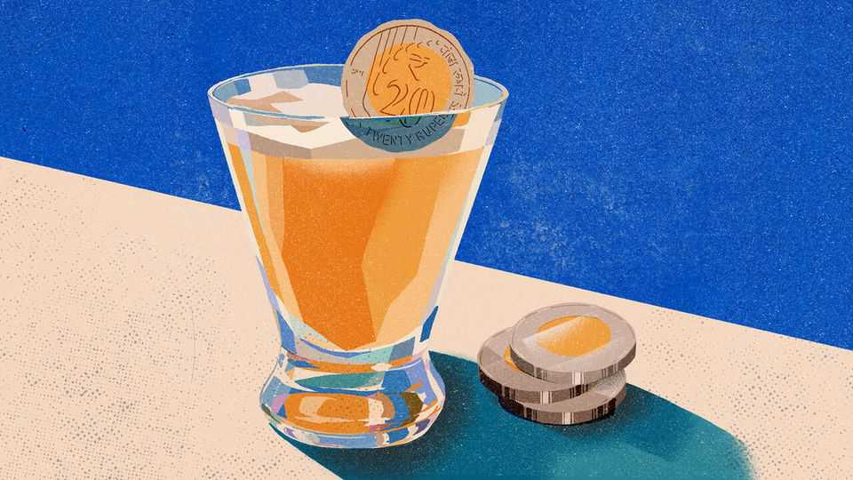

Money troubles are driving India’s states to drink
Things are so dire that one state has produced a rational alcohol policy
June 11th 2026

Just like many humans, Indian states have a conflicted relationship with booze. The Directive Principles of State Policy enshrined in the country’s constitution call on governments to “endeavour to bring about prohibition”. India celebrates its independence day, and many other public holidays, by imposing abstinence. In Kerala the first day of every month is dry. In Maharashtra drinkers must (in theory) have a state-issued permit. These attempts to cut down should be familiar to anyone who has ever woken up worse for wear and vowed never to drink again.
On the other hand, the Directive Principles are a non-binding list of aspirations likened even at independence to “resolutions made on New Year’s Day which are broken on the 2nd of January”. There is always a reason for a cheeky tipple. Pricey hotels get exemptions from dry-day rules in the interests of promoting tourism. Gujarat, a dry state since its creation, recently allowed booze to flow freely in GIFT City, a startup special economic zone it aspires to turn into a global financial centre. And nothing can replace the warm fuzzy feeling of those delicious liquor taxes. Indian states are abstemious in the streets and drunk on their spreadsheets.
In 2017 India introduced a nationwide goods and services tax (GST) to replace a baffling array of state levies. It was a much-needed reform that blended the country into a smooth single market, but left states without the ability to set taxes in response to their own needs. Partly as a result of this, their indebtedness has grown. Yet states have been spaffing plenty of money on handouts and other bungs to voters. Most of them are strapped for cash.
What to do? As with many problems, the answer is found in drink. GST left two main areas for states to tax independently: energy and booze. Raising levies on fuel is politically difficult and feeds into the prices of everything. But just a fifth of Indian men admit to drinking at all and only 1% of women do. Even before the GST reform many states saw alcohol as a convenient source of rent, raising duties and imposing labyrinthine licensing rules. After GST it became existential.
Yet taxes cannot rise too much. Consumers will switch to cheaper stuff or to moonshine (deaths from methanol poisoning are depressingly common). Nor can states be seen to loosen rules and promote drinking. Prohibition remains popular, especially among poorer women who bear the burden of their husbands’ alcoholism. States must somehow raise duties, but not too much, and keep the drinks flowing, but not too freely.
It is in search of this difficult balance that Karnataka—whose capital, Bangalore, has excellent pubs—formed a committee to look into excise reform. Its draft report, recently made public, is perhaps the first document in the history of independent India to take a rational approach to alcohol. At its core is the concept of social harm and how to price it.
The report points out that, as in most Indian states, Karnataka taxes beer (with 5-8% alcohol) more than twice as much as spirits (40%). Moreover, premium brands such as Greater Than, an artisan gin, attract higher rates than, for example, Blue Riband, a clear fluid produced by somebody who once overheard a description of gin. Their alcohol content—and the harm it causes—is near-identical. The report recommended switching to a system based on the amount of alcohol in the bottle, regardless of what it calls itself or how it is marketed, plus a form of consumption tax. This is the standard system in boozy nations from Australia to Britain.
The committee that wrote the report is silent on revenue projections, probably to avoid giving the impression that boosting takings was the chief intent. But insiders reckon revenue would surge. Karnataka’s chief minister announced initial reforms even before the report was made public. And no wonder. It is a unicorn of a policy: sensible, remunerative and politically feasible. There will be losers, chiefly poor men who drink potent spirits. But the government report also suggests new measures to lower the risk that they will turn to hooch.
The reform is likely to be copied. In India’s federal system, successful policies spread quickly. That will be a relief for the country’s drinkers of beer, wine and premium spirits. More important, it will be a victory for common sense. And all it took to get here was a shot of concentrated financial pressure stirred into eight decades of sparkling hypocrisy. That is a sobering thought.■
Subscribers to The Economist can sign up to our Opinion newsletter, which brings together the best of our leaders, columns, guest essays and reader correspondence.